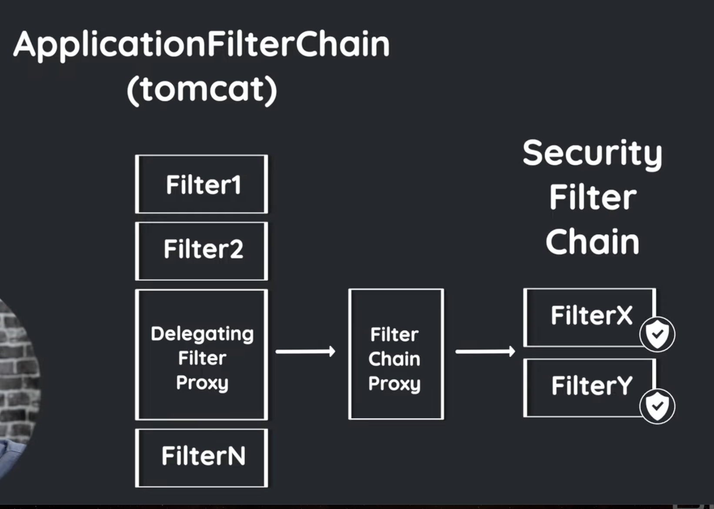

Spring Security Filter Chian 自定义 RobotFilter, Spring学习(六)
Contents
视频介绍
此文章参考视频的 54:35 之后, 用于做笔记, 可直接观看视频:
{% youtube iJ2muJniikY %}
- 关于 authentication object, 可以参考上一篇或者观看视频 33:00,
- 关于 filter chain, 可参考视频 39:15, 或参考: FIlter Architecture Spring Security

功能陈述
- 添加一个管理员角色, 可以不用登录, 通过 special header 就可访问所有需要认证的页面, 大概下面这样:
curl localhost:8080/private -H "x-robot-password: beep-boop" -v
项目结构
此文章所用代码在上一篇文章基础上编写, 本篇文章代码地址: https://github.com/shwezhu/springboot-learning/tree/master/spring-mr-robot-filter-demo
|
|
主要是为了理解 FilterChian 是一个 list 结构, 即有多个 filter, 然后每个 filter 都有 doFilter 方法, 他们是在方法体里被调用的 而不是 for loop 结构被循环调用, 这样的好处是我们可以决定在方法体的哪部分进行 doFilter 调用, doFilter 就是进入下一个 filter, 这里说的不准确, 深入理解参考: FIlter Architecture Spring Security
自定义 Filter - RobotFilter类
|
|
把该 Filter 添加到 SecurityFilterChain, 在我们上篇文章常见的 WebSecurityConfig 类内,
|
|
然后输入
|
|
项目终端输出,
|
|
解释下为何继承 OncePerRequestFilter ,
每个 servlet 都可以有不同的 SecurityFilterChain, 也就是说一个项目可以有多个 SecurityFilterChain, 在上一篇文章中提到的一个 WebSecurityConfig 类, 我们在该类中配置了 SecurityFilterChain, 其实 SecurityFilterChain 可以有多个, 即我们现在的项目不够复杂, 只用了一个, 比如我们可以再加个 SecurityFilterChain 让其只处理 /api/** 相关 endpoints, 如下:
|
|
写 JSP 的时候一个 servlet 负责的是一个对应的 endpoint, 我们写 spring 代码的时候只是用个简单的注解指定对应endpoint, Spring 框架在底层帮我们实现了对应的 servlet , 然后运行的时候这些 servlet 运行在 tomcat 中, tomcat 会把每个 request 分类然后转发给对应的 servlet, 说这些只是想说, servlet 才是真正处理 request 的东西, 即产生 http response, 而 filter 则是工作在 servlet 之前或者之后帮我们过滤, 认证 request, servlet 很笨, 只负责处理传给他的 request, 像是个没大脑的工厂,
上面我们提到, 每个 servlet 都可以有不同的 SecurityFilterChain, 于是再看下面这些解释使用 OncePerRequestFilter 的原因, 你就能看懂了,
The request could be dispatched to a different (or the same) servlet using the request dispatcher. A common use-case is in Spring Security, where authentication and access control functionality is typically implemented as filters that sit in front of the main application servlets. When a request is dispatched using a request dispatcher, it has to go through the filter chain again (or possibly a different one) before it gets to the servlet that is going to deal with it. The problem is that some of the security filter actions should only be performed once for a request. Hence the need for this filter. What is OncePerRequestFilter? - Stack Overflow
A Filter can be called either before or after servlet execution. When a request is dispatched to a servlet, the
RequestDispatchermay forward it to another servlet. There’s a possibility that the other servlet also has the same filter. In such scenarios, the same filter gets invoked multiple times. Spring guarantees that theOncePerRequestFilteris executed only once for a given request. What Is OncePerRequestFilter? | Baeldung
其实这里还有需要深入探讨的东西, 比如 RequestDispatcher 是做什么的, 现在我们要知道的是, 一个项目可以有多个 FilterChain, Servlet 才是真正处理 http request的东西, FilterChain 只是帮 servlet 过滤 request, 至于 每个 request 怎么被 tomcat 分配到 对应servlet的, 这还需要深入的学习才能理解, 关于 FIlterChain 可参考: Architecture Spring Security
实现思路
- 创建我们的特殊 RobotFilter, 通过继承
OncePerRequestFilter实现 - 因为访问的页面需要 authenticated, 因此创建特殊 RobotFilter 时, 需要新建一个 authentication object
RobotAuthentication来表示 robot 用户 - 在账号密码登录认证 filter 前添加我们刚自定义的
RobotFilter, 通过修改WebSecurityConfig::securityFilterChain方法实现
本文主要参考: Spring Security, demystified by Daniel Garnier Moiroux
Author David
LastMod 2023-08-07